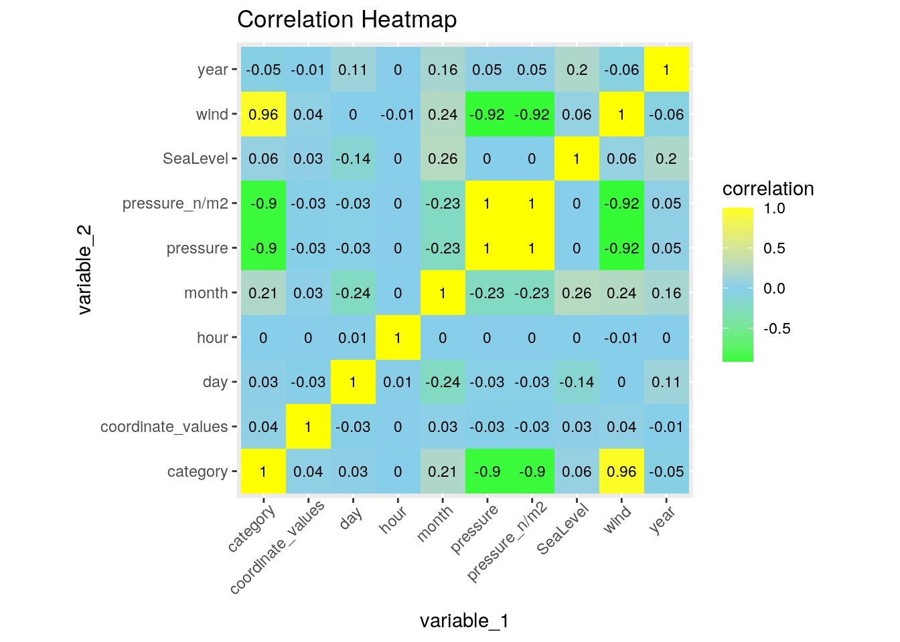
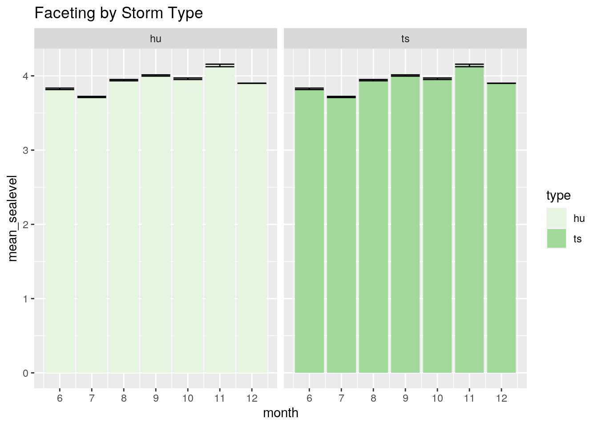
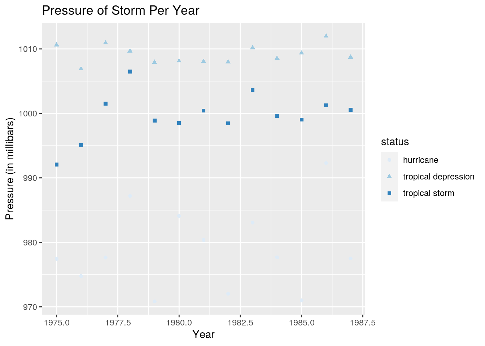
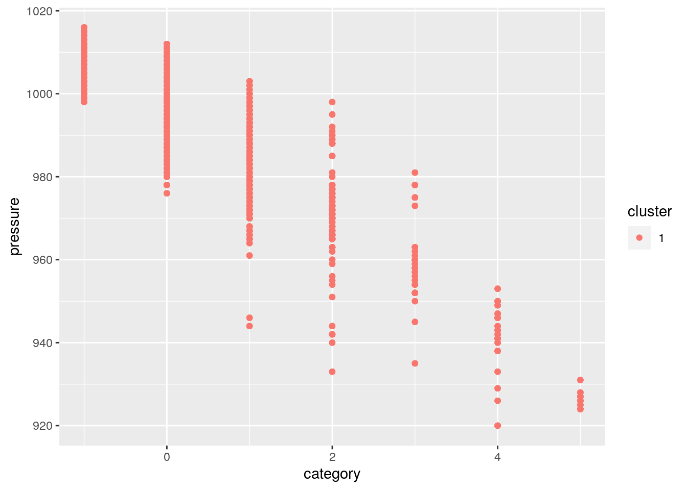
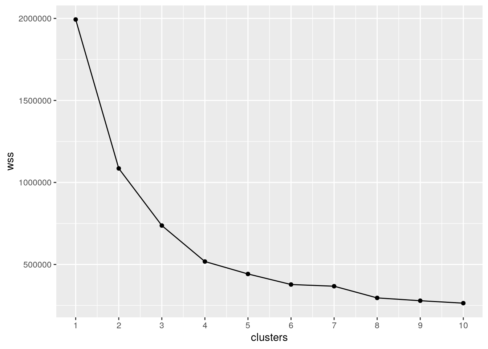
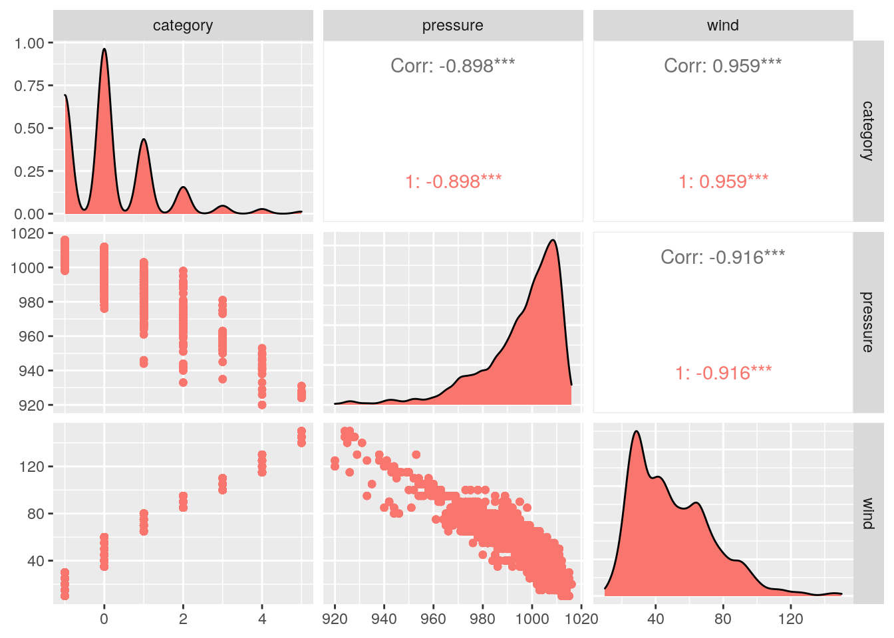
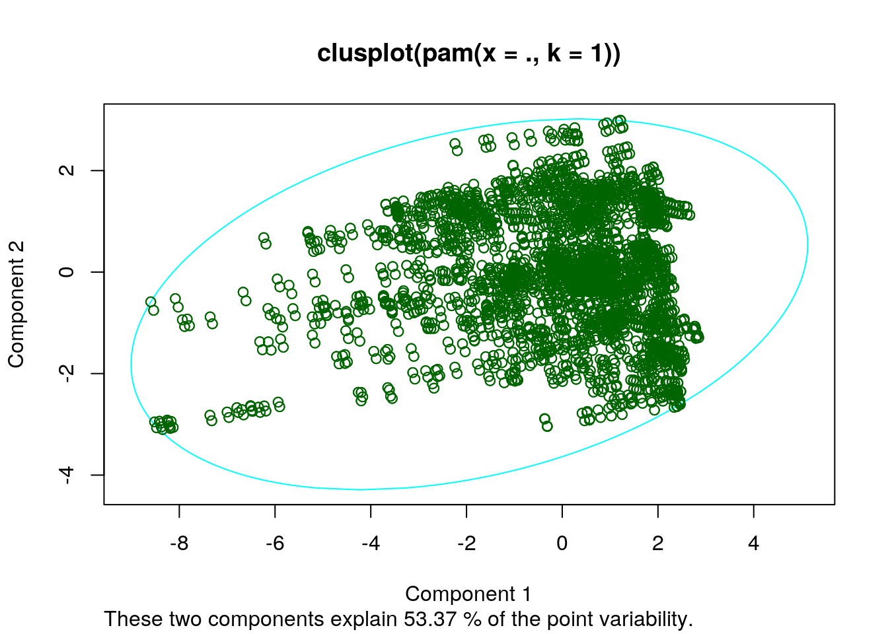

knitr::opts_chunk$set(echo = TRUE, eval = TRUE, fig.align = "center",
warning = F, message = F, tidy = TRUE, tidy.opts = list(width.cutoff = 60),
R.options = list(max.print = 100))###Introduction Climate change is becoming a hot topic these days with rising temperatures and concurrently an increase in tropical storms. The first dataset I chose focuses on different tropical storms and their characteristics: storm name, year, date of report, coordinates, pressure (in millibars), status, category, and wind speed (in knots). This data was collected from the NOAA Atlantic Hurricane database and was measured frequently during each tropical storm. The second dataset contains the sea level that breached an established threshold over the course of a few years. I chose to examine how sea level related to the characteristics of tropical storms because of my passion for climate change, natural disasters, and the ocean. I previously took a Marine Biology course where we studied ENSO patterns and the tropical storms that ensued during the La Niña and El Niño oscillations. When choosing these datasets, I hoped to understand what categorizes a tropical storm and the effects each one reaps.
library(tidyverse)
sealevel <- read_csv("sealevel.csv")
storms <- read_csv("storms.csv")
storms %>% glimpse()## Rows: 10,010
## Columns: 14
## $ X1 <dbl> 1, 2, 3, 4, 5, 6, 7, 8, 9, 10, 11, 12, 13, 14, 15, 16, 17…
## $ name <chr> "Amy", "Amy", "Amy", "Amy", "Amy", "Amy", "Amy", "Amy", "…
## $ year <dbl> 1975, 1975, 1975, 1975, 1975, 1975, 1975, 1975, 1975, 197…
## $ month <dbl> 6, 6, 6, 6, 6, 6, 6, 6, 6, 6, 6, 6, 6, 6, 6, 6, 7, 7, 7, …
## $ day <dbl> 27, 27, 27, 27, 28, 28, 28, 28, 29, 29, 29, 29, 30, 30, 3…
## $ hour <dbl> 0, 6, 12, 18, 0, 6, 12, 18, 0, 6, 12, 18, 0, 6, 12, 18, 0…
## $ lat <dbl> 27.5, 28.5, 29.5, 30.5, 31.5, 32.4, 33.3, 34.0, 34.4, 34.…
## $ long <dbl> -79.0, -79.0, -79.0, -79.0, -78.8, -78.7, -78.0, -77.0, -…
## $ status <chr> "tropical depression", "tropical depression", "tropical d…
## $ category <dbl> -1, -1, -1, -1, -1, -1, -1, -1, 0, 0, 0, 0, 0, 0, 0, 0, 0…
## $ wind <dbl> 25, 25, 25, 25, 25, 25, 25, 30, 35, 40, 45, 50, 50, 55, 6…
## $ pressure <dbl> 1013, 1013, 1013, 1013, 1012, 1012, 1011, 1006, 1004, 100…
## $ ts_diameter <lgl> NA, NA, NA, NA, NA, NA, NA, NA, NA, NA, NA, NA, NA, NA, N…
## $ hu_diameter <lgl> NA, NA, NA, NA, NA, NA, NA, NA, NA, NA, NA, NA, NA, NA, N…storms1 <- storms %>% pivot_longer(cols = c("ts_diameter", "hu_diameter"),
names_to = "storm_type", values_to = "diameter")
storms1 <- storms1 %>% separate(storm_type, into = c("type",
NA), sep = 2)
storms1 <- storms1 %>% pivot_longer(c("lat":"long"), names_to = "coordinates",
values_to = "coordinate_values")
storms1 %>% na.omit()## # A tibble: 6,252 x 14
## X1 name year month day hour status category wind pressure type
## <dbl> <chr> <dbl> <dbl> <dbl> <dbl> <chr> <dbl> <dbl> <dbl> <chr>
## 1 6472 Alex 2004 7 31 18 tropi… -1 25 1010 ts
## 2 6472 Alex 2004 7 31 18 tropi… -1 25 1010 ts
## 3 6472 Alex 2004 7 31 18 tropi… -1 25 1010 hu
## 4 6472 Alex 2004 7 31 18 tropi… -1 25 1010 hu
## 5 6473 Alex 2004 8 1 0 tropi… -1 25 1009 ts
## 6 6473 Alex 2004 8 1 0 tropi… -1 25 1009 ts
## 7 6473 Alex 2004 8 1 0 tropi… -1 25 1009 hu
## 8 6473 Alex 2004 8 1 0 tropi… -1 25 1009 hu
## 9 6474 Alex 2004 8 1 6 tropi… -1 25 1009 ts
## 10 6474 Alex 2004 8 1 6 tropi… -1 25 1009 ts
## # … with 6,242 more rows, and 3 more variables: diameter <lgl>,
## # coordinates <chr>, coordinate_values <dbl>storms1 <- select(storms1, -diameter, -X1)
storms1 %>% glimpse()## Rows: 40,040
## Columns: 12
## $ name <chr> "Amy", "Amy", "Amy", "Amy", "Amy", "Amy", "Amy", "A…
## $ year <dbl> 1975, 1975, 1975, 1975, 1975, 1975, 1975, 1975, 197…
## $ month <dbl> 6, 6, 6, 6, 6, 6, 6, 6, 6, 6, 6, 6, 6, 6, 6, 6, 6, …
## $ day <dbl> 27, 27, 27, 27, 27, 27, 27, 27, 27, 27, 27, 27, 27,…
## $ hour <dbl> 0, 0, 0, 0, 6, 6, 6, 6, 12, 12, 12, 12, 18, 18, 18,…
## $ status <chr> "tropical depression", "tropical depression", "trop…
## $ category <dbl> -1, -1, -1, -1, -1, -1, -1, -1, -1, -1, -1, -1, -1,…
## $ wind <dbl> 25, 25, 25, 25, 25, 25, 25, 25, 25, 25, 25, 25, 25,…
## $ pressure <dbl> 1013, 1013, 1013, 1013, 1013, 1013, 1013, 1013, 101…
## $ type <chr> "ts", "ts", "hu", "hu", "ts", "ts", "hu", "hu", "ts…
## $ coordinates <chr> "lat", "long", "lat", "long", "lat", "long", "lat",…
## $ coordinate_values <dbl> 27.5, -79.0, 27.5, -79.0, 28.5, -79.0, 28.5, -79.0,…The “storms” dataset contains a couple extra columns, such as the diameter of tsunamis and hurricanes, so I merged “ts_diameter” and “hu_diameter” into “type” to show the type of storm. There were no values in the “diameter” column, so I removed it from the dataset. This helped tidy the “storms” dataset (renamed as storms1). To do this, I used the “pivot_longer” function to rearrange my data as longer rather than wider. I also omitted NAs and columns that I deemed unnecessary for the analyzing in this project (i.e. diameter and X1).
merged <- storms1 %>% full_join(sealevel, by = c(year = "Year"))
merged <- merged %>% na.omit()
merged <- select(merged, -X1)
dim(merged)## [1] 6816 13I merged the two datasets together using the full_join function because I didn’t want to drop any rows, even if there wasn’t a match. The “sealevel” dataset only contains 2 columns: “year” and “sea level”, so I wanted to preserve all the entries before omitting any NAs. The common variable between the “storms1” dataset and the “sealevel” dataset was named differently, one being “Year” and the other being “year”, so I had to merge keeping that in mind. There were multiple observations for the joining variable, but each row had unique characteristics relative to the year, so only ended up omitting NAs rather than collapsing. I also omitted the NAs to further clean up the dataset and make it more usable when working with summary statistics and for developing plots. After dropping these NA values, the merged dataset contains 6,816 rows and 13 columns.
merged %>% filter(category >= 3) %>% arrange(desc(SeaLevel)) %>%
select(month, category, SeaLevel)## # A tibble: 252 x 3
## month category SeaLevel
## <dbl> <dbl> <dbl>
## 1 9 3 4.55
## 2 9 3 4.55
## 3 9 3 4.55
## 4 9 3 4.55
## 5 9 3 4.55
## 6 9 3 4.55
## 7 9 3 4.55
## 8 9 3 4.55
## 9 9 3 4.55
## 10 9 3 4.55
## # … with 242 more rowsmerged <- merged %>% mutate(`pressure_n/m2` = pressure * 100)
merged %>% summarize(mean(SeaLevel), median(SeaLevel), min(SeaLevel),
max(SeaLevel), first(SeaLevel), last(SeaLevel))## # A tibble: 1 x 6
## `mean(SeaLevel)` `median(SeaLeve… `min(SeaLevel)` `max(SeaLevel)`
## <dbl> <dbl> <dbl> <dbl>
## 1 3.96 3.9 3.62 4.55
## # … with 2 more variables: `first(SeaLevel)` <dbl>, `last(SeaLevel)` <dbl>merged %>% summarize(mean(category), median(category), min(category),
max(category), first(category), last(category))## # A tibble: 1 x 6
## `mean(category)` `median(categor… `min(category)` `max(category)`
## <dbl> <dbl> <dbl> <dbl>
## 1 0.157 0 -1 5
## # … with 2 more variables: `first(category)` <dbl>, `last(category)` <dbl>merged %>% summarize(mean(pressure), median(pressure), min(pressure),
max(pressure), first(pressure), last(pressure))## # A tibble: 1 x 6
## `mean(pressure)` `median(pressur… `min(pressure)` `max(pressure)`
## <dbl> <dbl> <dbl> <dbl>
## 1 996. 1000 920 1016
## # … with 2 more variables: `first(pressure)` <dbl>, `last(pressure)` <dbl>merged %>% summarize(mean(coordinate_values), median(coordinate_values),
min(coordinate_values), max(coordinate_values), first(coordinate_values),
last(coordinate_values))## # A tibble: 1 x 6
## `mean(coordinat… `median(coordin… `min(coordinate… `max(coordinate…
## <dbl> <dbl> <dbl> <dbl>
## 1 -20.5 -5.6 -103 51.8
## # … with 2 more variables: `first(coordinate_values)` <dbl>,
## # `last(coordinate_values)` <dbl>merged %>% summarize(mean(month), median(month), min(month),
max(month), first(month), last(month))## # A tibble: 1 x 6
## `mean(month)` `median(month)` `min(month)` `max(month)` `first(month)`
## <dbl> <dbl> <dbl> <dbl> <dbl>
## 1 8.78 9 6 12 6
## # … with 1 more variable: `last(month)` <dbl>merged %>% summarize(mean(name), median(name), min(name), max(name),
first(name), last(name))## # A tibble: 1 x 6
## `mean(name)` `median(name)` `min(name)` `max(name)` `first(name)` `last(name)`
## <dbl> <dbl> <chr> <chr> <chr> <chr>
## 1 NA NA AL031987 Lili Amy Floydmerged %>% group_by(year) %>% summarize(mean_sealevel = mean(SeaLevel),
min_pressure = min(pressure), last_storm = last(name))## # A tibble: 13 x 4
## year mean_sealevel min_pressure last_storm
## <dbl> <dbl> <dbl> <chr>
## 1 1975 3.91 963 Doris
## 2 1976 3.72 957 Gloria
## 3 1977 4 926 Evelyn
## 4 1978 3.66 980 Juliet
## 5 1979 3.62 924 Henri
## 6 1980 4.33 970 Karl
## 7 1981 4.55 946 Katrina
## 8 1982 3.75 950 Ernesto
## 9 1983 4.08 962 Dean
## 10 1984 3.9 949 Lili
## 11 1985 3.88 920 Kate
## 12 1986 3.94 987 Danielle
## 13 1987 4.33 958 Floydmerged %>% group_by(status) %>% summarize(median_category = median(category),
max_coordinates = max(coordinate_values), first_month = first(month))## # A tibble: 3 x 4
## status median_category max_coordinates first_month
## <chr> <dbl> <dbl> <dbl>
## 1 hurricane 1 50.8 8
## 2 tropical depression -1 41.7 6
## 3 tropical storm 0 51.8 6correlation <- merged %>% select_if(is.numeric) %>% cor(use = "pair")
merged %>% summarize(cor(pressure, wind, use = "pair"))## # A tibble: 1 x 1
## `cor(pressure, wind, use = "pair")`
## <dbl>
## 1 -0.916The severity of tropical storms increases with category (on a scale of 1-5), so I wanted to observe both the sea level for these higher category storms as well as when they primarily occur. Tropical storms usually peak in the fall from August to late October, and by filtering for higher category storms, I could confirm that the most severe tropical storms happened from August to September. By selecting for these three specific columns, I could see how they related to each other, such as how higher category storms showed higher sea levels and happened during the peak storm season. I created a new variable using mutate to convert pressure in millibars to Newtons per meter squared, which is a more conventional pressure unit and easier to visualize when understanding storm severity.
I used summary statistics (namely “summarize” and “group_by” on multiple variables to see how they appear during certain years and storm statuses. The summary statistics (mean, median, min, max, first, and last) for multiple variables are shown above and show the characteristics of these tropical storms overall. When grouped by year, I could see the average sea level, minimum pressure and last storm for each year. When grouped by storm status, I could see the median category, the maxiumim coordinates, and the first month a storm occurred based on status. Results are shown above in tables. I chose 2 variables (wind speed and pressure) and studied their correlation, which was -0.916, meaning wind speed and pressure are strongly, negatively correlated.
tidy_correlation <- correlation %>% as.data.frame %>% rownames_to_column("variable_1") %>%
pivot_longer(-1, names_to = "variable_2", values_to = "correlation")
tidy_correlation %>% ggplot(aes(variable_1, variable_2, fill = correlation)) +
geom_tile() + scale_fill_gradient2(low = "green", mid = "sky blue",
high = "yellow") + geom_text(aes(label = round(correlation,
2)), color = "black", size = 3) + theme(axis.text.x = element_text(angle = 45,
hjust = 0.9)) + coord_fixed() + ggtitle("Correlation Heatmap") After plotting a correlation heatmap to see how strongly each of the variables are related, I observed that there was a strong, positive correlation (between wind and category). I also observed a strong, negative correlation between wind speed and pressure (pressure measured in millibars and the mutated pressure column measured in N/m^2). I created the heatmap using ggplot and changed the coloration to easily visualize which variables were positively and negatively correlated.
merged %>% group_by(month, type) %>% summarize(mean_sealevel = mean(SeaLevel),
sd_sealevel = sd(SeaLevel), count_sealevel = n(), se_sealevel = sd_sealevel/sqrt(count_sealevel)) %>%
ggplot(aes(month, mean_sealevel)) + geom_bar(stat = "identity",
aes(fill = type)) + geom_errorbar(aes(x = month, y = mean_sealevel,
ymin = mean_sealevel - se_sealevel, ymax = mean_sealevel +
se_sealevel)) + facet_wrap(~type) + scale_x_continuous(breaks = seq(1,
12)) + ggtitle("Faceting by Storm Type") + scale_fill_brewer(palette = "Greens") I was curious to see how sea level differed by month for hurricanes versus tropical storms. It looks like the sea level for both was very similar, and this could be because the measurements were taken in the same area (in the Atlantic) and that these storms overlapped each other. Hurricanes can be classified as tropical storms after crossing a threshold, so it could be possible that many storms started as hurricanes byt morphed into tropical storms, which is why the data between the two for average sea level is so similar.
ggplot(data = merged, aes(x = year, y = pressure, color = status,
shape = status, group = status)) + geom_point(stat = "summary",
fun = mean, aes(color = status)) + ggtitle("Pressure of Storm Per Year") +
ylab("Pressure (in millibars)") + xlab("Year") + scale_color_brewer() Tropical storms, such as cyclones and hurricanes, are characterized by their significant drop in air pressure. Based on the scatterplot, tropical storms and depressions showed a dip in pressure between 1979 and 1983, the years that boasted some of the highest category tropical storms, such as Typhoon Tip. Pressure appears to be lower during tropical storms than it is for tropical depressions. This solidifies the fact that tropical storms are more destructive and higher category storms than tropical depressions. They boast higher wind speeds and lower pressures.
###5. Dimensionality Reduction
library(cluster)
library(GGally)
library(plotly)
cluster <- merged %>% dplyr::select(category, pressure, wind)
pam <- cluster %>% pam(k = 1)
pamcluster <- cluster %>% mutate(cluster = as.factor(pam$clustering))
pamcluster %>% ggplot(aes(category, pressure, wind, color = cluster)) +
geom_point()
pamcluster %>% group_by(cluster) %>% summarize_if(is.numeric,
mean, na.rm = T)## # A tibble: 1 x 4
## cluster category pressure wind
## <fct> <dbl> <dbl> <dbl>
## 1 1 0.157 996. 50.3kmeans <- cluster %>% kmeans(1)
kmeanscluster <- cluster %>% mutate(cluster = as.factor(kmeans$cluster))
kmeanscluster %>% ggplot(aes(category, pressure, wind, color = cluster)) +
geom_point()wss <- vector()
for (i in 1:10) {
finalcorrelation <- merged %>% dplyr::select(category, pressure,
wind) %>% kmeans(., i + 1)
wss[i] <- finalcorrelation$tot.withinss
}
ggplot() + geom_point(aes(x = 1:10, y = wss)) + geom_path(aes(x = 1:10,
y = wss)) + xlab("clusters") + scale_x_continuous(breaks = 1:10)
cluster_data <- merged %>% select_if(is.numeric) %>% scale %>%
pam(1)
PAM_1 <- merged %>% select_if(is.numeric) %>% scale %>% pam(1)
ggpairs(pamcluster, columns = 1:3, aes(color = cluster))
plot(PAM_1, which = 1) I performed PAM and k-means on three numeric variables (category, pressure, and wind), using both methods to double check the variable correlations. After performing k-means, 1 cluster is the best number of clusters to use. This could be because the data is not spread out enough to form clusters. I proceeded to use PAM on all my numeric variables and visualize their clustering, which also showed my data was not very spread out and rather concentrated. Using GGally, I determined the pairwise combinations between pressure, category, and wind. I learned how correlated these variables were. After performing a clustering plot function (which=1), I learned that my numeric variables explain 53.37% of the point variability.